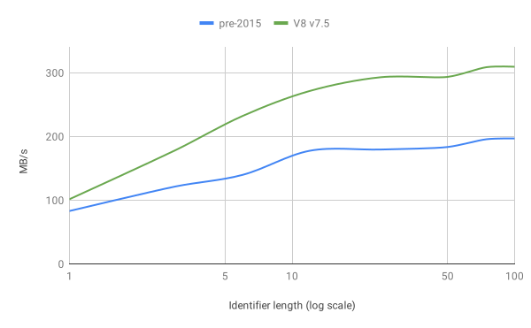
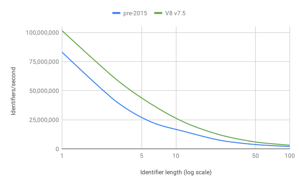
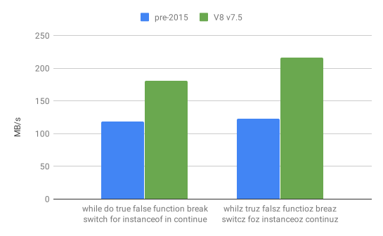

极速解析（一）: 优化扫描器
- 原文→
- 空白符（Whitespace）
- 标识符扫描
- 内化精简标识符（Internalizing minified identifiers）
- 关键字（Identifier scanning）
- 代理对（Surrogate pairs）
- AdvanceUntil
- 结论
原文→
要运行JavaScript程序，需要处理源代码文本，以便V8能够理解它。V8首先将源代码解析为一棵抽象语法树（AST），这是一组表示程序结构的对象。然后AST被Ignition编译成字节码。这些解析+编译阶段的性能非常重要：V8在编译完成之前不能运行代码。在这一系列的博客文章中，我们将重点放在解析上，以及V8实现的快速解析器所完成的工作。
实际上，我们在解析器之前的一个阶段就开始了这个系列。V8的解析器读取的“tokens”是由“扫描器”提供的。Token是由若干具有单一语义含义的字符组成的块：字符串、标识符、运算符（例如：++）。扫描器通过组合底层字符流中的连续字符来构造这些tokens。
扫描器读取的是一串Unicode字符流。这些Unicode字符总是从UTF-16代码单元流中解码。我们之所以只支持UTF-16编码规范，是为了避免对各种编码规范进行区分或定制化的扫描解析，同时这也是JavaScript字符串的编码规范，且源代码定位依赖于该编码规范。UTF16CharacterStream提供一种（可能被缓冲）UTF-16编码的方式来兼容底层Latin1、UTF-8或UTF-16编码，这些编码通过Chrome从网络上获取再传递给V8。除了支持多种编码规范外，扫描器和字符流的分离允许V8透明地扫描，就好像整个数据源是可用的一样，即使到目前为止我们可能只通过网络接收到部分数据。
在扫描器和字符流之间的接口是一个命名为Utf16CharacterStream::Advance()的方法，它返回下一个UTF-16代码单元，或者返回-1表示输入结束。一个UTF-16代码单元不能对每个Unicode字符进行编码。基本多语言平面之外的字符编码是两个代码单元，也称为代理对。不过，扫描器操作的是Unicode字符，而不是UTF-16代码单元，因此它将这个底层流接口封装在Scanner::Advance()方法中，该方法将UTF-16代码单元解码为完整的Unicode字符。当前解码的字符由Scanner::ScanString()这样的扫描方法缓冲并取走。
扫描器根据最多4个字符（JavaScript中最长的模糊字符序列[1]）选择特定的扫描器方法或token。一旦选择了像ScanString这样的方法，它将处理该token的剩余字符，并为下一个扫描的token（非当前token的一部分）缓冲第一个字符。ScanString还将扫描的字符复制到编码为Latin1或UTF-16的缓冲区中，同时解码转义序列。
空白符（Whitespace）
Token可以用不同类型的空白符隔开，例如换行符、空格键、制表符、单行注释、多行注释等。一种类型的空白符后可以跟其他类型的空白符。如果添加空白符导致两个token之间出现换行，则可能自动插入分号。因此，在扫描下一个token之前，将略过所有空白符，并记录新的换行。大多数实际的JavaScript代码是被精简的，所以多个空白符并不常见。因此，V8统一独立地扫描每种类型的空白符，就好像它们是普通的token一样。例如，假设token的第一个字符是/，然后紧挨着另一个/，V8会将其扫描为单行注释，并返回Token::WHITESPACE。循环持续扫描，直到找出非Token::WHITESPACE的token。这意味着，如果下一个token之前没有空白符，我们将立即开始扫描相关的token，而不需要显式地检查空白符。
然而，循环本身会增加每次扫描token的开销：它需要一个分支来验证刚扫描的结果。如果我们刚刚扫描的token是Token::WHITESPACE，则最好继续循环。反之我们就应该跳出循环。实现这些，我们是通过将循环本身放到一个的单独的辅助方法中，该方法在确定不是Token::WHITESPACEtoken后，就直接返回token。尽管这类修改看起来很小，但它们消除了每次扫描token的开销。对于像标点符号这样的短token来说，尤其有效：
标识符扫描
标识符是最复杂也是最常见的token，它用于JavaScript中的变量名（以及其它作用）。标识符以一个Unicode字符开头，并具有ID_Start属性，之后的字符序列是可选地，并具有ID_Continue属性。查看一个Unicode字符是否具有ID_Start或ID_Continue属性是非常消耗性能的。通过插入一个从字符到其属性的映射缓存，我们可以稍微加快速度。
虽然大多数JavaScript源代码是使用ASCII字符编写的。但在ASCII字符范围中，只有a-z，A-Z，$和_是标识符的起始字符。ID_Continue额外的包括0-9。我们通过创建一个表为128个ASCII字符中的每一个添加标记，识别是ID_Start字符，还是ID_Continue字符等，从而加速标识符扫描。当我们要查看的字符在ASCII范围内时，我们在这个表中查找对应的标记，并用一个单独的分支验证属性。直到我们找到第一个没有ID_Continue属性的字符之前，字符都是标识符的一部分。
本文中提到的所有改进加起来，在标识符扫描性能方面存在以下差异：

较长的标识符扫描速度更快，这点似乎有违直觉。这可能会使你认为增加标识符长度有利于提升性能。在MB/s这个维度上，扫描较长的标识符肯定更快，因为我们在一个非常紧密的循环中停留的时间更长，而没有返回解析器。但是，从应用程序性能的角度来看，你关注的是扫描全部token的速度。下图大致展示了每秒扫描的token数与token长度的关系：

这里很明显，使用较短的标识符对应用程序的解析性能是有益的：每秒我们能够扫描更多的token。这意味着，以MB/s作为衡量维度的站点看起来解析更快但信息密度较低，即实际上每秒生成的token更少。
内化精简标识符（Internalizing minified identifiers）
在扫描程序和解析器的边界上，所有字符串字面量和标识符都将删除重复数据。如果解析器请求字符串或标识符的值，对于每个可能的文本值，解析器将收到一个唯一的字符串对象。这通常需要一个哈希表来查找。由于JavaScript代码经常被精简，因此V8对单一的ASCII字符串使用简单的查询表。
关键字（Identifier scanning）
关键字是由编程语言定义的标识符的特殊子集，例如if、else和function。V8的扫描器返回的关键字token与标识符不同。扫描标识符后，我们需要识别该标识符是否是关键字。由于JavaScript中的所有关键字只包含小写字符a-z，所以我们还保留了一些标记，用来表明ASCII字符是否可能是关键字start和continue字符。
如果一个标识符根据标记可能是关键字，我们可以通过匹配标识符的第一个字符来找到候选关键字的子集。第一个字符比关键字的长度更独特，因此减少了后续条件分支的数量。对于每个字符，我们基于可能的关键字长度进行条件判断，并且只在长度相等的情况下再将标识符与关键字进行比较。
更好的方法是使用一种名为完美哈希的技术。由于关键字列表是静态的，我们可以计算出一个完美的哈希函数，对于每个标识符该函数最多只能给我们一个候选关键字。V8使用gperf来计算这个函数。结果是根据标识符的长度和前两个字符计算出哈希，用来找到唯一候选关键字。只有当关键字的长度与输入标识符的长度匹配时，我们才比较标识符和关键字。这尤其加快了识别出标识符不是关键字的情况，因为我们只需要较少的条件分支来判断它。

代理对（Surrogate pairs）
如前所述，我们的扫描器工作在UTF-16编码的字符流上，但处理的是Unicode字符。补充平面中的字符只对标识符token有特殊意义。例如，假设这样的字符出现在字符串中，它们不会终止字符串。JS支持单个代理（Lone Surrogates），并且只从源代码复制。因此，除非绝对必要，最好避免组合代理对，并让扫描器直接对UTF-16代码单元进行操作而不是Unicode字符。当我们扫描一个字符串时，我们不需要寻找代理对，组合它们，然后在我们构建文本时再次拆分存储的字符。扫描器只剩下两个地方需要处理代理对。在token扫描开始时，只有当我们不能将识别某个字符时，才需要组合代理对用来检查结果是否是标识符开始。类似地，在处理非ASCII字符的标识符扫描的慢路径中，我们需要组合代理对。
AdvanceUntil
扫描器和UTF16CharacterStream之间的接口边界是有状态的。流会记录它在缓冲区中的位置，在处理完每个代码单元之后，位置随之递增。在扫描器再次调用请求字符的扫描方法之前，会先缓冲一个已接收的代码单元。那个扫描方法读取缓冲的字符并且基于字符的值继续执行。这提供了很好的分层，但相当慢。去年秋天，我们的实习生Florian Sattler提出了一个改进的接口，它既保留了分层的优点，又能够在流中更快的访问代码单元。一个模板化的函数AdvanceUntil，专门用于特定的扫描辅助函数，在流中每个字符都调用该辅助函数，直到辅助函数返回false。这本质上为扫描器提供了对底层数据的直接访问，而不会破坏抽象。它实际上简化了扫描辅助函数，因为它们不需要处理EndOfInput。
AdvanceUntil对于加速可能需要消耗大量字符的扫描函数特别有用。我们用它来加速前面已经提到的标识符，以及字符串[2]和注释。
结论
扫描性能是解析器性能的基石。我们已经调整了扫描器，使之尽可能的高效。这导致了全面的改进，单token扫描的性能提高了大约1.4倍，字符串扫描提高了1.3倍，多行注释扫描提高了2.1倍，标识符扫描提高了1.2–1.5倍，这取决于标识符的长度。
我们的扫描器只能做这么多。作为开发人员，你可以通过增加程序的信息密度来进一步提高解析性能。最简单的方法是精简源代码，去掉不必要的空白符，并尽可能避免非ASCII标识符。理想情况下，这些步骤作为构建过程的一部分是自动化的，在这种情况下，编写代码时不必担心它。